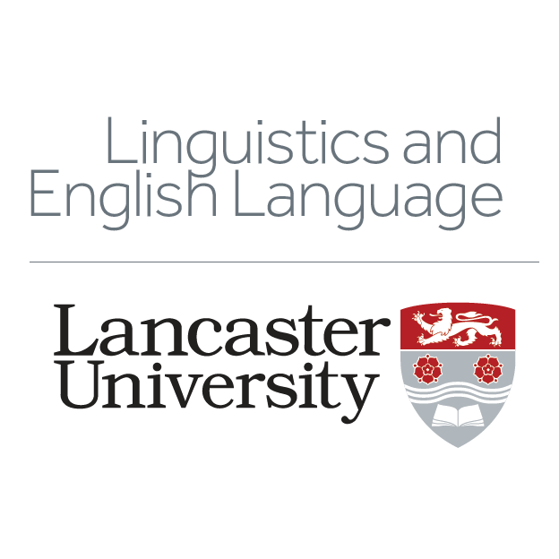

Research Facilities
Welcome to our discipline's research facilities page. Explore the inventory that allows us to conduct unique and innovative research!
Our discipline has been highly successful in securing continuous internal and external funding for research equipment and software,
allowing us to conduct innovative and unique research in our respective subfields.
Read about our facilities below.
Hardware
- EEG System: Brain Products full Electroencephalography (EEG) setup to investigate brain activity during language processing.
- Eye Tracking: Tobii TX300 desktop eyetracker and Tobii Pro Fusion mobile eyetracker to explore language processing through eye movements.
- Articulography: Carstens AG501 Electromagnetic Articulograph (EMA) for measuring tongue and lip movements during speech.
- Ultrasound Tongue Imaging: Ultrasonix and Mindray ultrasound systems, plus portable micro Ultrasound Tongue Imaging setups for capturing tongue shape in and outside the lab.
- Sound Booth: IAC Acoustics soundproof booth for high-quality speech recordings.
- Voice Analysis: Laryngograph electroglottographs for studying vocal fold activity.
- Aerodynamics: Biopac aerodynamics system and a custom-built nasalance system for analysing airflow and pressure in speech.
Software - custom made/home grown uniquely developed at Lancaster
- Articulate Instruments Advanced (ultrasound and video analysis)
- LancsBox X (corpus linguistics software for collocation research, see more here: https://lancsbox.lancs.ac.uk/)
- Wmatrix (tool for corpus analysis and comparion, see more here: https://ucrel.lancs.ac.uk/wmatrix/)
- CLAWS (part-of-speech tagger for English language corpus annotation, see more here: https://ucrel.lancs.ac.uk/claws/)
- CQPweb (corpus query processor for corpus linguistics, see more here: https://cqpweb.lancs.ac.uk/)
University-Licensed Software
- NVivo & Atlas.ti: Qualitative discourse analysis of large datasets.
- Facets & Winsteps: Rasch analysis software (commonly used in language testing research).
- Qualtrics: Survey platform for collecting language data and attitudes.